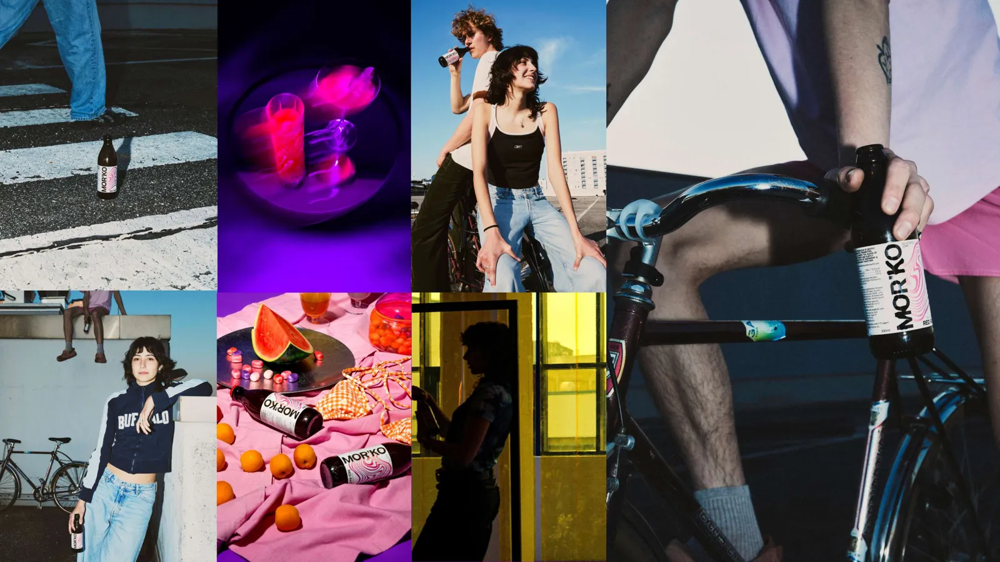
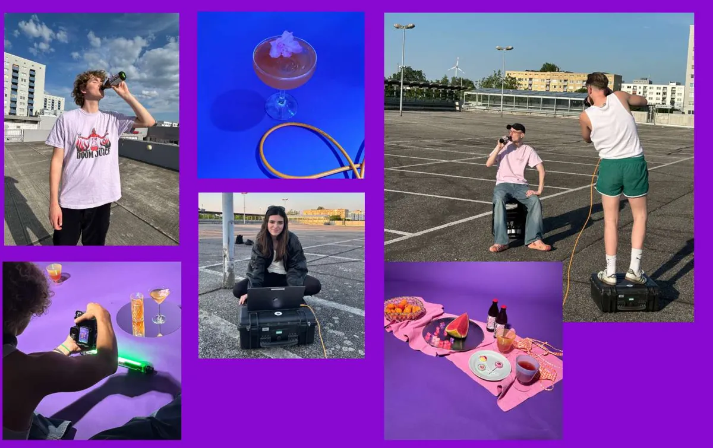
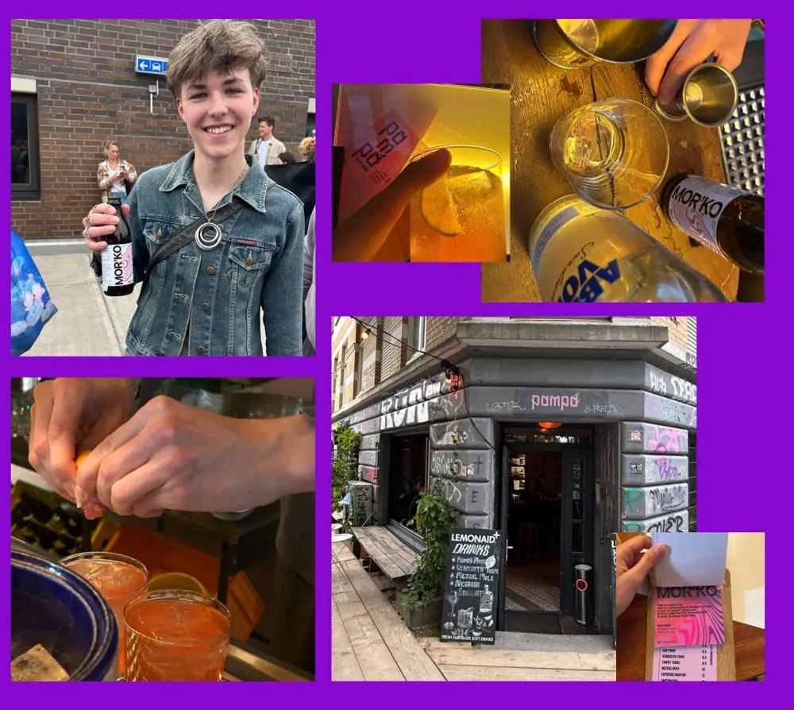

← Work / No. 01
MOR'KO Kombucha
A kombucha that does not want to be a health drink. Something to hold at the bar instead.

Context
MOR'KO was a newcomer in a sceptical market. In Hamburg and the rest of northern Germany, kombucha was still a niche, and the category was dominated by health-focused positioning.
Challenge
People saw kombucha as too healthy or simply odd-tasting.
Goal
Shift that perception and bring kombucha to a mainstream audience. Build a brand that fits social life and nights out.
What we heard
“I want to socialise, but I feel pressured to drink alcohol. Lemonade or water feels boring or out of place when everyone else is having a beer.”
In-depth interviews showed a dual audience: social types looking for something non-alcoholic that still feels refreshing and keeps them going through the night, and curious foodies drawn to elevated culinary experiences.
They also showed that the sour taste of traditional kombucha is a barrier in social settings. So we refined the product itself: less sour, smoother, closer to a lemonade.
Brand idea
MOR'KO goes beyond the typical health drink. It becomes almost an accessory: a social catalyst.
Naming
Vocal, playful, meaningful. More means sea in Ukrainian, and mor'ko is the tender, diminutive way of saying it. Imagine a hot summer day. All you want is a dip in the cold sea. You jump in. That feeling is only comparable to the first sip of MOR'KO.
Identity & packaging
A vibrant, playful but sophisticated identity, set apart as both social and refined. The label puts the brand's attitude up front: “No alcohol, sorry. Yes, gluten free.” The wave motif comes from the sea, echoing the name and giving the bottle a fluid, vibrant feel.
A neutral typeface lets the brand's strong personality speak, with clarity and no distraction. The palette is energetic but kept minimal.

Shoot
Product and lifestyle shoot, from creative concept and moodboard to location scouting, casting, props and set, team coordination and on-site shoot management.
Activation
“F*ck healthy, have a drink.” A pop-up event with kombucha mixology at a youth-centric bar in an urban hotspot.
